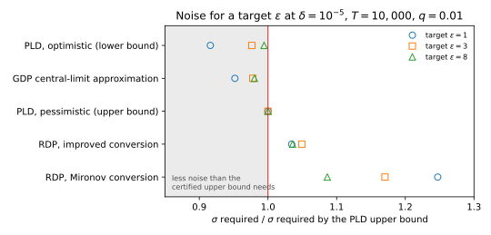

37 Choosing an accountant
You have trained a model with differential privacy (DP). The training loop was stochastic gradient descent (SGD) with per-example clipping and Gaussian noise, called DP-SGD. At each step every record joins the batch independently with probability \(q\) (Poisson sampling), each record’s gradient is clipped to norm at most \(C\), and Gaussian noise of standard deviation \(\sigma C\) is added to the sum. So the noise multiplier \(\sigma\) measures the noise against one record’s largest contribution. Your run used \(q = 0.01\), \(\sigma = 1\) and \(T = 10{,}000\) steps, and you must now write “the model is \((\varepsilon, 10^{-5})\)-DP” in a paper or a model card. That promises that for any two datasets \(D \sim D'\) that differ by one added or removed record, any event about what training released is at most \(e^\varepsilon\) times as likely on one as on the other, plus \(\delta = 10^{-5}\).
The run is fixed, so its true \(\varepsilon\) is one number. Nobody can compute it exactly, and a procedure that bounds or estimates it is called an accountant. This part has built several, and they disagree. Per-step guarantees, composed, give 11296.93, while Rényi differential privacy (RDP) gives 7.4287 or 6.7127, depending on the conversion of its curve. The Gaussian differential privacy (GDP) central limit theorem (CLT) says 6.0071, and a privacy loss distribution (PLD) accountant brackets the truth in \([6.1377, 6.2377]\). Which one do you report, and what else must you say so that someone else can check it?
The numbers differ because the accountants make different kinds of statement. Some are upper bounds, proved for every pair of neighbouring datasets, and one is a proved lower bound, while others are approximations that may land below the truth. So the rule is short: report the tightest upper bound whose assumptions hold for the code you ran, and enough for someone else to recompute it. The sections take its clauses in turn, and the chapter’s script imports every accountant from the chapter of this part that derived it.
| Symbol | Meaning |
|---|---|
| \(q\), \(\sigma\), \(C\), \(T\), \(n\) | sampling rate, noise multiplier, clipping norm, steps, records |
| \(\alpha\), \(\varepsilon(\alpha)\) | Rényi order; the RDP curve of one step |
| \(\mu\); \(L\); \(h\) | GDP parameter; privacy loss; grid width of a PLD |
| \(\varepsilon^\uparrow_{\text{PLD}}\), \(\varepsilon^\downarrow_{\text{PLD}}\) | \(\varepsilon\) of the pessimistic and the optimistic PLD |
| \(\varepsilon_{\text{true}}\) | the smallest \(\varepsilon\) for which the run is \((\varepsilon, \delta)\)-DP |
37.1 Every accountant on one run
On the running example, what does each accountant report, and which of its numbers can you trust? Earlier chapters computed most of the numbers, and the optimal conversion of an RDP curve adds one more. With all of them in one table, you can sort the accountants by the kind of statement each makes.
All accountants start from what one step reveals about one record. The other records contribute the same on both datasets, so look only at the noisy sum along that record’s clipped gradient, in units of \(C\). Without the record, the output is pure noise, \(\mathcal N(0, \sigma^2)\). With it, the record joins the batch with probability \(q\) and then shifts the output by at most 1, and the worst case is exactly 1, so the output is the mixture \((1 - q)\mathcal N(0, \sigma^2) + q\mathcal N(1, \sigma^2)\). The accountants differ in what they keep of this pair and in how they combine \(T\) copies of it.
Definition 37.1 (Upper bound, lower bound and approximation) An accountant maps the parameters of a run and a target \(\delta\) to a number \(\varepsilon_A\). Write \(\varepsilon_{\text{true}}\) for the smallest \(\varepsilon\) for which the run is \((\varepsilon, \delta)\)-DP. The accountant is an upper bound if \(\varepsilon_A \ge \varepsilon_{\text{true}}\) for every run that satisfies its assumptions, and a lower bound if \(\varepsilon_A \le \varepsilon_{\text{true}}\) for every such run. It is an approximation if neither is proved.
A lower bound is not a privacy guarantee, but it tells you how far any valid upper bound can fall. The six accountants of the part are these.
- Per step, then composition (Amplification by subsampling). One Gaussian step is \((\varepsilon_0, \delta_0)\)-DP. The record is absent with probability \(1 - q\), so subsampling dilutes \(e^{\varepsilon_0}\) to \(1 + q(e^{\varepsilon_0} - 1)\), which gives \(\varepsilon_1\) (Equation 33.8). Then \(T\) steps compose, by basic composition to \(T\varepsilon_1\), or by advanced composition, which grows like \(\sqrt T\) at the price of an extra slack \(\delta'\).
- RDP, Mironov’s conversion (Rényi DP). RDP describes one step by the curve \(\varepsilon(\alpha)\), the Rényi divergence of order \(\alpha > 1\) between the two outputs (Equation 33.17). Curves add under composition, and Markov’s inequality turns the composed curve into \((\varepsilon, \delta)\) at the best order (Theorem 29.5): \[\varepsilon = \min_\alpha\Big[T\,\varepsilon(\alpha) + \frac{\ln(1/\delta)}{\alpha - 1}\Big]. \tag{37.1}\]
- RDP, improved conversion (Equation 30.7 in From Rényi DP to (ε, δ) and to tests). A sharper analysis of the same tail (Balle et al. 2020) saves, at each order, an amount that does not depend on the curve.
- RDP, optimal conversion (the same chapter). It gives the smallest \(\varepsilon\) that holds at \(\delta\) for every pair of distributions with the curve \(T\,\varepsilon(\alpha)\).
- GDP central-limit approximation (Equation 32.16 in f-DP and Gaussian DP). A mechanism is \(\mu\)-GDP if telling its two outputs apart is no easier than telling \(\mathcal N(0, 1)\) from \(\mathcal N(\mu, 1)\). The loss of \(T\) steps is a sum of \(T\) small losses, so it is close to Gaussian. The approximation treats the run as \(\mu\)-GDP with \(\mu = q\sqrt{T(e^{1/\sigma^2} - 1)}\) and reads \(\varepsilon\) off the GDP profile Equation 32.9.
- PLD, pessimistic and optimistic (Numerical accounting). The privacy loss \(L\) at an output is the log of how much likelier it is on one neighbour than on the other, and the PLD is its distribution. Losses add, so the PLD of \(T\) steps is a \(T\)-fold convolution, computed with the fast Fourier transform (FFT) on a grid of width \(h = 10^{-5}\). Every loss rounded up gives the pessimistic PLD, whose \(\varepsilon\) is the “PLD upper” column below, and rounded down gives the optimistic one, “PLD lower”. The accountant converts each to \(\varepsilon\) with the record in the first dataset and in the second, and keeps the larger value (Section L.2 in the appendices).
Table 37.2 gives every accountant’s \(\varepsilon\) on the running example.
| \(T\) | Basic | Advanced | RDP, Mironov | RDP, improved | RDP, optimal | GDP CLT | PLD upper | PLD lower |
|---|---|---|---|---|---|---|---|---|
| 1 | 0.20 | 1.13 | 1.3175 | 0.9555 | 0.4899 | 0.0368 | 0.1995 | 0.1994 |
| 10 | 3.64 | 7.88 | 1.4145 | 1.0353 | 0.7951 | 0.1304 | 0.3800 | 0.3799 |
| 100 | 58.01 | 78.10 | 1.6118 | 1.2141 | 1.1538 | 0.4575 | 0.7185 | 0.7175 |
| 1,000 | 839.39 | 1258.64 | 2.5380 | 2.1014 | 2.1009 | 1.6177 | 1.8332 | 1.8232 |
| 10,000 | 11296.93 | 24379.55 | 7.4287 | 6.7127 | 6.7127 | 6.0071 | 6.2377 | 6.1377 |
The next theorem sorts the columns. It collects results proved earlier in the part, and adds the two chains that order the bounds.
Theorem 37.1 (Which accountants are bounds) Assume that the run samples each record independently with probability \(q\), clips each per-example gradient to norm \(C\), adds Gaussian noise of standard deviation \(\sigma C\) to the sum, releases every noisy gradient, and fixes \(q\), \(\sigma\) and \(T\) in advance, with add/remove neighbours. Then per-step composition, RDP with each conversion and the pessimistic PLD are upper bounds, and the optimistic PLD is a lower bound. They satisfy \[\varepsilon_{\text{RDP, Mironov}} \ge \varepsilon_{\text{RDP, improved}} \ge \varepsilon_{\text{RDP, optimal}} \ge \varepsilon_{\text{true}}, \qquad \varepsilon^{\uparrow}_{\text{PLD}} \ge \varepsilon_{\text{true}} \ge \varepsilon^{\downarrow}_{\text{PLD}}, \tag{37.2}\] and if the accountant drops no far tail of the loss distribution, the two PLD values differ by at most \(Th\).
Proof. The plan is to ask, for each accountant, whether what it keeps of the per-step pair still supports a proof, and then to order the RDP conversions.
- Per-step composition. One step is \((\varepsilon_1, q\delta_0)\)-DP by the amplification theorem. Basic composition (Theorem 19.3) and advanced composition (Theorem 21.1) hold even when each step is chosen after the earlier outputs (Theorem 21.5), which is how SGD works.
- RDP with Mironov’s or the improved conversion. The curve Equation 33.17 is the exact Rényi divergence of the pair. Curves add under adaptive composition (Equation 29.11), because the Rényi divergence is the log of a moment of the likelihood ratio, and given the earlier outputs each step adds fresh noise, so the moments multiply step by step. Both conversions are proved for every pair with the curve (Proposition 30.1, Theorem 30.1). The accountant minimizes over a finite grid of orders, which can only raise the minimum, so it costs tightness, never validity.
- The optimal conversion. For each \(\varepsilon\) it takes the largest privacy profile \(\delta(\varepsilon)\), the smallest \(\delta\) that works at \(\varepsilon\), over all pairs with the curve (Theorem 30.2). The real pair is one of them, so its profile is no larger, and \(\varepsilon_{\text{RDP, optimal}} \ge \varepsilon_{\text{true}}\).
- The PLD sandwich. Every loss rounded up describes a pair that leaks at least as much as the real one, a dominating pair, and a composition of dominating pairs is a dominating pair (Section K.3 in the appendices). A rounding down works the other way, so the error keeps its sign through all \(T\) convolutions, which is Equation 34.8.
- The width. Each step’s loss moves by less than \(h\) between its two roundings. After \(T\) steps the two composed losses differ by at most \(Th\) at every outcome, and \(\varepsilon\) is read off the loss, so the two \(\varepsilon\) values differ by at most \(Th\) too, unless a tail was dropped (Numerical accounting).
- Mironov above improved. At every order the improved conversion is smaller by the saving of Corollary 30.1, \[s(\alpha) = \frac{\ln\alpha}{\alpha - 1} + \ln\frac{\alpha}{\alpha - 1}, \tag{37.3}\] whose two terms are positive for \(\alpha > 1\). An expression that is larger at every order has a larger minimum.
- Improved above optimal. The optimal conversion is the smallest \(\varepsilon\) valid for every pair with the curve, and the improved one is such an \(\varepsilon\).
The theorem does not order the two chains against each other. The pessimistic PLD describes a rounded-up pair and may exceed the truth by up to \(Th\), so a curve-based bound very close to the truth could fall below it, and all that follows is \(\varepsilon_{\text{RDP, optimal}} \ge \varepsilon^\uparrow_{\text{PLD}} - Th\). The script finds RDP optimal above the PLD upper bound at all nine values of \(T\) it tries, from 1 to 10,000, because the gap between them (at least 0.2677, Table 37.4) is far larger than \(Th\) (at most 0.1000). But that is an observation, not a theorem.
The CLT is missing from the theorem because it is not a bound. Equation 32.16 is a limit as \(T \to \infty\) with \(q\sqrt T\) fixed, and it keeps only the mean and variance of the per-step loss (f-DP and Gaussian DP). Neither the limit nor the two-moment summary controls its error in the tail of the loss, where \(\delta = 10^{-5}\) is read, and here the CLT lies below the PLD lower bound at every \(T\).

Example 37.1 Table 37.3 divides each \(\varepsilon\) by the PLD upper bound, which is within \(Th\) of the truth, and Figure 37.1 plots it.
| \(T\) | Basic | Advanced | RDP, Mironov | RDP, improved | RDP, optimal | GDP CLT | PLD lower |
|---|---|---|---|---|---|---|---|
| 1 | 1.00 | 5.66 | 6.61 | 4.79 | 2.46 | 0.18 | 1.00 |
| 10 | 9.58 | 20.74 | 3.72 | 2.72 | 2.09 | 0.34 | 1.00 |
| 100 | 80.73 | 108.69 | 2.24 | 1.69 | 1.61 | 0.64 | 1.00 |
| 1,000 | 457.88 | 686.57 | 1.38 | 1.15 | 1.15 | 0.88 | 0.99 |
| 10,000 | 1811.07 | 3908.41 | 1.19 | 1.08 | 1.08 | 0.96 | 0.98 |
Per-step composition is right only at \(T = 1\), where there is nothing to compose. At \(T = 10{,}000\) it is off by a factor of over a thousand, because a sum of \(\varepsilon\)’s assumes that every step leaks its worst case, while the loss of each step is positive on some outputs and negative on others, so the losses mostly cancel. Advanced composition is worse still, because besides its \(\sqrt T\) term it has a term \(T\varepsilon_1(e^{\varepsilon_1} - 1)\) that grows like \(T\), and the amplified \(\varepsilon_1\) is too large for that term to be negligible.
RDP’s excess has two sources, which Table 37.4 separates. The conversion slack, improved minus optimal, is what the conversion of the curve into one \((\varepsilon, \delta)\) pair loses. The curve slack, optimal minus PLD upper, is what the curve loses because it keeps moments of the loss and not its whole distribution.
| \(T\) | Conversion slack | Curve slack | Total | Excess over PLD upper |
|---|---|---|---|---|
| 1 | 0.4656 | 0.2905 | 0.7561 | 379.1% |
| 10 | 0.2402 | 0.4151 | 0.6554 | 172.5% |
| 100 | 0.0603 | 0.4353 | 0.4956 | 69.0% |
| 1,000 | 0.0005 | 0.2677 | 0.2681 | 14.6% |
| 10,000 | 0.0000 | 0.4750 | 0.4750 | 7.6% |
The conversion slack dominates short runs, 0.4656 of the 0.7561 excess at \(T = 1\), because every conversion pays \(\ln(1/\delta)/(\alpha - 1)\), about \(11.5/(\alpha - 1)\) at \(\delta = 10^{-5}\), however small the curve is. That toll is also why basic composition (0.20) beats RDP (0.9555) at \(T = 1\), though both are valid. After many steps the curve term is large, so the best order trades it against a toll that is now small in comparison, and the conversion slack fades, to 0.0005 at \(T = 1000\). The last 7.6% at \(T = 10{,}000\) is curve slack, which only an accountant that keeps the whole distribution removes.
So after 1,000 steps a paper might say \(\varepsilon = 2.54\) (RDP with Mironov’s conversion, as in older code), 2.10 (the improved conversion), 1.83 (a PLD accountant) or 1.62 (the CLT). The first three are true, and 1.83 is the most informative. The fourth is false, because the optimistic PLD proves \(\varepsilon \ge 1.8232\). At \(T = 10{,}000\) the PLD bracket has width \(6.2377 - 6.1377 = 0.1000\), exactly \(Th\), and only a finer grid narrows it.
37.2 The inverse problem: noise for a target ε
Practitioners rarely compute \(\varepsilon\) after the fact. They fix a budget, say \(\varepsilon = 3\) at \(\delta = 10^{-5}\), fix the steps and the batch size, and ask how much noise to add. So what does each accountant’s slack cost in noise? The noisy sum, divided by the expected batch size \(qn\), leaves noise of standard deviation \(\sigma C/(qn)\) in the averaged gradient. A loose accountant overstates \(\varepsilon\) at every \(\sigma\), so it asks for a larger \(\sigma\), and its slack turns directly into noise.
Definition 37.2 (The noise an accountant requires) For an accountant \(A\), with \(q\) and \(T\) fixed, write \(\varepsilon_A(\sigma)\) for the \(\varepsilon\) it reports at \(\delta\) when the noise multiplier is \(\sigma\). The noise it requires for a target \(\varepsilon^*\) is \[\sigma_A(\varepsilon^*) = \min\{\sigma > 0 : \varepsilon_A(\sigma) \le \varepsilon^*\}. \tag{37.4}\]
This minimum is easy to find if more noise never raises the reported \(\varepsilon\), because then it is where a decreasing function crosses a level. You can expect that, because a noisier run can be made from a less noisy one without the data.
Proposition 37.1 (More noise never raises a bound) Let \(\sigma < \sigma'\). Per-step composition, RDP with each conversion and the exact PLD report \(\varepsilon_A(\sigma') \le \varepsilon_A(\sigma)\). The discretized PLD does so up to grid effects of order \(Th\), and the CLT’s \(\varepsilon\) falls strictly as \(\sigma\) grows.
Proof.
- Post-processing. Variances of independent Gaussians add, so fresh \(\mathcal N(0, \sigma'^2 - \sigma^2)\) noise added to each output of the run with \(\sigma\) gives exactly the run with \(\sigma'\), by a map that does not look at the data.
- Data processing. By Theorem 3.5, such a map can only lower every divergence between the two outputs, including the Rényi divergences behind the curve and the hockey-stick divergence that defines \(\delta(\varepsilon)\). Each listed accountant computes \(\varepsilon\) from these by a map that rises with them, so its \(\varepsilon\) falls.
- Grid and CLT. The rounding can move the composed loss against the trend by up to \(Th\). The CLT’s \(\mu = q\sqrt{T(e^{1/\sigma^2} - 1)}\) falls as \(\sigma\) grows, and Equation 32.9 gives a smaller \(\varepsilon\) for a smaller \(\mu\).
So any bracketing method finds \(\sigma_A(\varepsilon^*)\). The script uses false position, which places each guess where the line through the two ends crosses the target, with the Illinois modification that stops one end from getting stuck, so it needs only a handful of evaluations. That matters for the PLD, where each is two FFT compositions of 10,000 steps.
The solver stops when the bracket is narrower than \(10^{-4}\) and returns the upper end, where \(\varepsilon_A \le \varepsilon^*\) was checked, so the returned \(\sigma\) meets the budget even if grid effects make it a little larger than the minimum. For the PLD the bracket runs from 90% of the smaller of the RDP and CLT values to the RDP value. Theorem 37.1 does not order RDP against the PLD, so the solver checks that the target really lies between the two ends. The optimal conversion is left out because it costs a search of its own at every \(\sigma\). The CLT needs no search over \(\sigma\): find the \(\mu^*\) whose GDP profile gives \(\varepsilon^*\), and invert Equation 32.16 for \(\sigma\): \[\sigma = \frac{1}{\sqrt{\ln\big(1 + \mu^{*2}/(q^2T)\big)}}. \tag{37.5}\]
| Target \(\varepsilon\) | Advanced | RDP, Mironov | RDP, improved | GDP CLT | PLD upper | PLD lower |
|---|---|---|---|---|---|---|
| 1 | 24.682 | 4.974 | 4.126 | 3.796 | 3.988 | 3.654 |
| 3 | 10.505 | 1.854 | 1.662 | 1.549 | 1.584 | 1.547 |
| 8 | 5.711 | 0.962 | 0.917 | 0.868 | 0.885 | 0.880 |

Figure 37.2 shows each \(\sigma\) of Table 37.5 relative to the PLD upper bound’s. Advanced composition asks for 6.19 to 6.63 times the noise, a level at which DP-SGD rarely trains a useful model. Mironov’s conversion costs 8.6 to 24.7% more, most at the strictest target, where its fixed toll is the largest share of \(\varepsilon\), and the improved conversion 3.4 to 4.9% more. That is less than RDP’s 7.6% excess in \(\varepsilon\), because here a small relative rise in \(\sigma\) buys a larger relative fall in \(\varepsilon\).
The CLT asks for 2.0 to 4.8% less noise than the certified bound, and at \(\varepsilon = 8\) that is provably too little. At its \(\sigma = 0.8676\) the optimistic PLD already gives 8.2594, so the run is not \((8, 10^{-5})\)-DP, and an honest PLD report at that \(\sigma\) would read 8.3594. At \(\varepsilon = 1\) and 3 the grid cannot tell, since the PLD brackets at the CLT’s \(\sigma\), \([0.9550, 1.0550]\) and \([2.9938, 3.0938]\), contain the target. The width \(Th = 0.1\) is 10% of \(\varepsilon = 1\), so there the PLD pins \(\sigma\) only to \([3.654, 3.988]\).
Example 37.2 With \(n = 50{,}000\) records and \(q = 0.01\), the expected batch holds 500 records. At \(\varepsilon = 8\) the RDP accountant sets \(\sigma = 0.917\), so the averaged gradient carries noise of standard deviation \(0.917C/500\), while the PLD accountant sets \(\sigma = 0.885\). So the RDP accountant asks for 3.6% more noise for the same certified budget (the ratio 1.036 in Figure 37.2). From the other side, at \(\sigma = 0.8851\), where the PLD certifies \(\varepsilon = 8\), the RDP accountant reports 8.6330.
37.3 Where each accountant is tight
DP-SGD is one mechanism. You will also release statistics with the Gaussian mechanism, answer queries with pure-DP mechanisms (\(\delta = 0\)), shuffle locally randomized reports, or stop training adaptively. Which accountant is tight for which mechanism? An accountant is tight exactly when the summary it keeps describes the mechanism’s privacy loss without loss, so the answer changes with the mechanism. Zero-concentrated differential privacy (zCDP) joins the list here, with its summary of the RDP curve by one line \(\rho\alpha\) above it. Table 37.6 collects the answers from the earlier chapters.
| Mechanism | Use | Why, and how tight | Avoid |
|---|---|---|---|
| Gaussian, no subsampling | GDP or zCDP with Equation 32.9 | Exact; RDP’s conversion loses 5 to 10% (conversions) | Per-step composition |
| Poisson-subsampled Gaussian (DP-SGD) | Pessimistic PLD, optimistic as error bar | Bracket of width \(Th\); RDP 7.6 to 69% above it here for \(T \ge 100\) | zCDP, which cannot express amplification (Concentrated DP); the CLT |
| Pure-DP steps (randomized response, Laplace, exponential mechanism) | PLD, or RDP with the mechanism’s own curve | The loss takes few values, so the PLD is exact or nearly; zCDP is loose for large \(\varepsilon\) (Concentrated DP) | Advanced composition |
| Noise or stopping chosen during the run | RDP filter (Adaptive composition) | Exact at the order it tracks | Fixed-parameter theorems |
| Local randomizers behind a shuffler | Numeric bound of Shuffling and iteration | The closed form is 4.47 to 7.55 times the exact value there | The subsampling accountant |
| Only the last iterate released | Amplification by iteration (Shuffling and iteration) | Needs a convex, smooth loss and no released checkpoints | Such claims for deep learning |
The ranking in every row follows one ladder. An \((\varepsilon, \delta)\) pair keeps two numbers, zCDP one line, RDP a curve, GDP the whole trade-off function when it is Gaussian, and the PLD the entire distribution of the loss. Each rung loses information that the next keeps, and a worst case fills in what is lost. To measure that cost you need mechanisms whose true \(\varepsilon\) is known: one whose composed loss is exactly Gaussian, and one whose loss takes few values.
Proposition 37.2 (Two mechanisms with an exact ε)
\(T\) Gaussian steps of sensitivity 1 and noise multiplier \(\sigma\), without subsampling, are exactly \(\mu\)-GDP with \(\mu = \sqrt T/\sigma\), so Equation 32.9 gives their exact \(\varepsilon\). Their RDP curve \(\alpha\mu^2/2\) is also exact, and equals the zCDP line with \(\rho = \mu^2/2\).
\(k\) rounds of randomized response, each \(\varepsilon_0\)-DP, have composed loss \((k - 2J)\varepsilon_0\) with \(J \sim \mathrm{Bin}(k, 1/(1 + e^{\varepsilon_0}))\), so the exact \(\delta(\varepsilon)\) is a finite sum.
Proof.
- One Gaussian step. The two outputs \(\mathcal N(0, \sigma^2)\) and \(\mathcal N(1, \sigma^2)\), divided by \(\sigma\), are exactly \(\mathcal N(0, 1)\) and \(\mathcal N(1/\sigma, 1)\), so one step is \(1/\sigma\)-GDP with nothing lost.
- Gaussian composition. Squares of \(\mu\) add under composition, as variances do (f-DP and Gaussian DP), so \(\mu^2 = T/\sigma^2\). The Rényi divergence of two normals \(\mu\) standard deviations apart is \(\alpha\mu^2/2\) (Proposition 3.3), a line through the origin, so the best zCDP line is the curve itself.
- Randomized response. Each round’s loss is \(\pm\varepsilon_0\) and losses of independent rounds add (Lemma 21.2), which gives Proposition 21.1. The values lie on a lattice, so nothing is rounded, and \(\delta(\varepsilon)\), an average over the loss (Lemma 21.1), is a finite binomial sum.
So when the composed pair is exactly Gaussian, GDP costs nothing. When subsampling makes it a mixture, no closed form is exact, and only the PLD is both certified and tight. For adaptivity, RDP is the natural tool. If the noise or the stopping time depends on released outputs, the per-step pair is not fixed in advance as Theorem 37.1 assumed, and the Rényi filter of Adaptive composition handles that and loses nothing at the order it tracks.
Example 37.3 One hundred Gaussian steps with \(\sigma = 10\) compose to \(\mu = \sqrt{100}/10 = 1\), and Equation 32.9 gives the exact \(\varepsilon = 4.3772\) at \(\delta = 10^{-5}\). The equally exact RDP curve converts to 4.7285 with the improved conversion, 8.0% above, and to 5.2985 with Mironov’s. One hundred rounds of randomized response with \(\varepsilon_0 = 0.1\) have exact \(\varepsilon = 4.3068\), and RDP with the exact curve reaches 4.6154. zCDP must use a \(\rho\) whose line lies above the curve, and the smallest is \(\varepsilon_0\tanh(\varepsilon_0/2)\) per round, the charge that every \(\varepsilon_0\)-DP step satisfies (Equation 31.10), which gives 4.7263. Advanced composition with \(\delta' = \delta\) ends at 5.8502, and basic composition at \(100 \times 0.1 = 10.0000\).
So a team that releases the 100 Gaussian counts and reports \(\varepsilon = 5.2985\) from an old RDP accountant with Mironov’s conversion is 21.0% above the truth (\(5.2985/4.3772 \approx 1.210\)), and could have answered more queries at no cost in privacy.
37.4 Matching the accountant to the code
Every number so far assumes a model of the training run, and the accountant cannot check it against your code. It takes \(q\), \(\sigma\) and \(T\) and trusts that the code does what the theorem assumes. Ponomareva et al. (2023, Section 5.3.1) put it in one heading, “privacy accounting assumptions should match training reality”, and note that many papers since Abadi et al. (2016) have reported the Poisson number while training with shuffled fixed-size batches. What does such a mismatch cost? The number then describes a different algorithm. Check each item of Table 37.7 against the code before you report.
| Item | What the accountant assumes | What to check | If it does not match |
|---|---|---|---|
| Sampling scheme | Poisson at rate \(q\) | Independent inclusion, variable batch sizes? | Fixed-size: Proposition 37.3; shuffled: Proposition 37.4 |
| Neighbouring relation | Add/remove | Or replace-one, or zero-out (one gradient set to 0)? | Replace-one costs about twice as much (subsampling) |
| Privacy unit | One example | Several examples per person? | Clip and sample per user |
| Released outputs | Every noisy gradient | Checkpoints or logs exposed? | Already covered |
| Tuning | Not counted | Settings chosen on private results? | Proposition 37.5, or tune on public data |
| Adaptive parameters | Fixed in advance | Early stopping, schedules? | A filter (Adaptive composition) |
| Implementation | Exact real-valued noise | Floating-point sampling? | Outside the accountant’s scope |
The first row is the most common mismatch. A loader that draws a random batch of exactly \(qn\) records looks like Poisson sampling. But a record cannot enter a full batch without pushing another out, so in effect one record is swapped for another, and the batch sum can move by \(2C\) and not only \(C\).
Proposition 37.3 (Fixed-size batches (Lebeda et al. 2024)) If each step draws a fresh uniformly random batch of exactly \(qn\) records, then under add/remove neighbours every \(\varepsilon\) certified for the Poisson pair with rate \(q\) and noise multiplier \(\sigma/2\) holds for the run with noise multiplier \(\sigma\).
The proof is Proposition 9 of Lebeda, Regehr, Kamath & Steinke (2024), which shows with Zhu, Dong & Wang (2022, Theorem 11) that the shift of \(2C\) is the worst case under the add and the remove relation separately. A shift of \(2C\) against noise \(\sigma C\) is a shift of \(C\) against \((\sigma/2)C\), and Amplification by subsampling derives the coupling behind it.
A loader that shuffles once per epoch and cuts the data into batches uses each record exactly once per epoch. The record is then never absent by chance, which is what amplification needs, so no amplification theorem holds for every dataset. What stays certain is the record’s own steps, one per epoch, under the zero-out relation, in which one record’s gradient is replaced by zero.
Proposition 37.4 (The guarantee without amplification) Suppose each of \(E\) epochs shuffles the data and cuts it into consecutive batches, with noise multiplier \(\sigma\). Under zero-out neighbours the run is \(\sqrt E/\sigma\)-GDP, and under replace-one neighbours it is \(2\sqrt E/\sigma\)-GDP.
Proof. The plan is to fix the shuffles, find the one step per epoch that differs, and compose those steps.
- Fix the shuffles. They do not depend on the data. If they were also published, an observer could only gain, and the real run drops them, a post-processing (Theorem 19.1), so it is enough to prove the bound with them fixed.
- One step per epoch differs. With the shuffles fixed, only the batch that holds the record differs, and its sum moves by at most \(C\) under zero-out. Every other step, given the earlier outputs, has the same distribution on both datasets.
- That step is Gaussian. A shift of \(C\) against noise \(\sigma C\) is \(1/\sigma\)-GDP, by part (a) of Proposition 37.2.
- Compose. The \(E\) differing steps compose adaptively to \(\mu^2 = E/\sigma^2\) (f-DP and Gaussian DP). Under replace-one, the old gradient leaves and a new one comes in, so the shift is up to \(2C\) and \(\mu\) doubles.
Under add/remove there is no clean bound, because an inserted record shifts every later batch. Ponomareva et al. recommend that you report this guarantee whenever the sampling assumption fails. Tuning breaks the accountant’s assumptions differently, because the release depends on several runs while the accountant counts one.
Proposition 37.5 (Tuning on the private data composes) Training \(m\) configurations on the private data and releasing the best costs at most the \(m\) runs composed. With RDP, that is the curve \(mT\,\varepsilon(\alpha)\).
Proof.
- Post-processing. The best run is a function of the \(m\) trained models, so by Theorem 19.1 releasing it is no less private than releasing all \(m\).
- Composition. The \(m\) runs use the same data, so their RDP curves add (Equation 29.11).
Papernot & Steinke (2022) do much better when the number of configurations is random, and NIST SP 800-226 (Section 4.3) recommends tuning on non-sensitive data.
Example 37.4 At \(T = 10{,}000\), fixed-size batches accounted honestly by Proposition 37.3 give 47.42 with RDP instead of 6.71, and 43.42 with the PLD instead of 6.24. Shuffle and partition for 100 epochs at \(\sigma = 1\) is \(\mu = \sqrt{100} = 10\) by Proposition 37.4, and Equation 32.9 gives \(\varepsilon = 91.8173\) for zero-out neighbours, or 284.39 at \(\mu = 20\) under replace-one. Ten tuning runs compose to \(\varepsilon = 27.23\) with RDP, and 100 runs to 145.17.
So a script whose DataLoader has shuffle=True and batch_size=500 on 50,000 records for 100 epochs, and that calls an RDP accountant with sample_rate=0.01, fails the checklist’s first row, and its certified guarantee is 91.8173, not 6.71. A loader with Poisson sampling, a change of a few lines, makes the assumptions true and the guarantee 6.24 with a PLD accountant.
So the sampling scheme is the largest single risk. Its factor of 6.96 (\(43.42/6.24\)) from one line in the data loader exceeds the choice between RDP and the PLD, at most 1.19 here (Table 37.3). The other rows decide what the number means. Example-level DP-SGD protects each example, not each user, which NIST SP 800-226 (Section 2.4) calls a privacy hazard, and floating-point noise can break a mechanism that is correct on paper (Section 4.3).
37.5 What to report
An \(\varepsilon\) without its assumptions cannot be checked, compared or even read, since the same number means different things for one example or one user, with or without tuning, at \(\delta = 10^{-5}\) or \(10^{-10}\). So what must a statement contain for a reader to interpret and recompute it? NIST SP 800-226, “Guidelines for Evaluating Differential Privacy Guarantees” (Near, Darais, Lefkovitz & Howarth, 2025), answers for anyone who evaluates a claim, and Ponomareva et al. (2023, Section 5.3.3) answer for machine learning.
Definition 37.3 (A privacy statement) Following Ponomareva et al. (2023, Section 5.3.3), a privacy statement gives four things.
- The DP setting: central or local, and who is trusted.
- The instantiated definition: which data accesses are covered (one run, or tuning too), the mechanism’s output, the unit of privacy, and the neighbouring relation.
- Accounting details: the type of accounting, its assumptions and whether they hold, and the formal guarantee for the final model and for the tuning.
- Transparency: code when possible, using standard libraries.
For DP-SGD it adds what the accountant needs: the sampling scheme, \(q\) (or the batch size and \(n\)), \(T\) (or the epochs), \(\sigma\), the clipping norm \(C\), and the accountant’s version and discretization.
The clipping norm is listed although \(\varepsilon\) does not depend on it, because \(C\) and \(\sigma\) together give the actual noise \(\sigma C\) and let a reader check the implementation.
The second parameter needs as much care. Both documents want \(\delta\) much smaller than \(1/n\) for \(n\) units of privacy, because \(\delta\) is a chance that the promise fails. A mechanism that publishes each record in full with probability \(\delta\) is \((0, \delta)\)-DP, yet at \(\delta = 1/n\) it exposes someone with probability about \(1 - 1/e = 0.632\) (Proposition 18.3). Ponomareva et al. (Section 5.3.2) suggest \(\delta = n^{-1.1}\). NIST (Section 2.3) gives \(\delta \le 1/n^2\) as a common recommendation, calls values above \(10^{-5}\) suspicious, and asks for the original RDP, zCDP or GDP parameters alongside any conversion.
So a report should give \(\varepsilon\) at more than one \(\delta\), and one pair does not determine the others. For example, the mechanism that publishes the record with probability \(\delta\) is \((0, \delta)\)-DP. But at any \(\delta' < \delta\) it has no finite \(\varepsilon\), because the event “the record is published” has probability \(\delta\) on one dataset and 0 on the other, and no factor \(e^\varepsilon\) closes that gap. A PLD accountant composes the distribution once, and each further \(\delta\) costs one more evaluation of \(\delta(\varepsilon)\).
| \(\delta\) | PLD upper | PLD lower | RDP, improved |
|---|---|---|---|
| \(2.0\times10^{-5}\) (\(1/n\)) | 6.0068 | 5.9068 | 6.4884 |
| \(1.0\times10^{-5}\) | 6.2377 | 6.1377 | 6.7127 |
| \(6.8\times10^{-6}\) (\(n^{-1.1}\)) | 6.3641 | 6.2641 | 6.8353 |
| \(1.0\times10^{-6}\) | 6.9574 | 6.8574 | 7.4140 |
| \(4.0\times10^{-10}\) (\(1/n^2\)) | 9.0502 | 8.9378 | 9.4540 |
Example 37.5 With \(n = 50{,}000\) records, the expected batch is \(qn = 500\), and \(T = 10{,}000\) steps are \(Tq = 100\) epochs. The conventions give \(1/n = 2.0\times10^{-5}\), \(n^{-1.1} = 6.8\times10^{-6}\) and \(1/n^2 = 4.0\times10^{-10}\), and Table 37.8 gives \(\varepsilon\) at each. The usual \(\delta = 10^{-5}\) is half of \(1/n\), so it is not “much smaller than \(1/n\)”, and at \(1/n^2\) the certified \(\varepsilon\) rises to 9.0502. The PLD bracket has width 0.1000, the \(Th\) of Theorem 37.1, down to \(\delta = 10^{-6}\). At \(1/n^2\) it is \(9.0502 - 8.9378 = 0.1124\), because the accountant cuts off the far tails of each step’s PLD and moves up to \(10^{-15}\) of mass to the side that keeps each bound safe. Over \(10^4\) steps that is of order \(10^{-11}\), a few percent of \(4\times10^{-10}\). The RDP accountant’s original parameter is its curve, \(\varepsilon(4.1) = 3.7336\) at the best order, which converts to 6.7127.
Privacy guarantee. The model was trained with DP-SGD in the central model: the training server is trusted to run the code below, and the guarantee covers every intermediate noisy gradient, hence every checkpoint and the final model. Unit of privacy: one training example; each person contributes at most one example. Neighbouring relation: add or remove one example. Training: Poisson sampling with rate \(q = 0.01\) (\(n = 50{,}000\) examples, expected batch size 500), \(T = 10{,}000\) steps (100 epochs), per-example clipping norm \(C = 1\), Gaussian noise multiplier \(\sigma = 1\). Accountant: privacy loss distributions, pessimistic discretization on the grid \(h = 10^{-5}\), both add and remove directions (this book’s
numerical_accounting.py). Guarantee: \((6.24, 10^{-5})\)-DP and \((9.06, 4.0\times10^{-10})\)-DP. The optimistic discretization gives 6.1377 and 8.9378, so the accountant’s own error is at most 0.1000 and 0.1124. Not covered: hyperparameters were tuned on a public proxy dataset. If the sampling assumption failed (for example, shuffled fixed-size batches), the guarantee without amplification is \((91.82, 10^{-5})\)-DP for zero-out neighbours.
Upper bounds are rounded up, never to the nearest value, so 9.0502 becomes 9.06, because 9.05 would be a claim the accountant has not certified.
The statement gives the accountant’s error bar, which RDP cannot give for lack of a lower bound, and the fallback for a reader who doubts an item of Table 37.7.
37.6 Checking your accountant
An accountant is code, and code has bugs. How do you test one, yours or a library’s, before you trust its number? A good test is a case where the truth is known exactly, or a property that every correct accountant must have, so that a failure is a bug and not slack. The results of this chapter give four.
Proposition 37.6 (Four properties of every correct accountant) Under the assumptions of Theorem 37.1:
- With \(q = 1\) the run is exactly \(\sqrt T/\sigma\)-GDP, and every upper bound is at least the \(\varepsilon\) that Equation 32.9 gives.
- On the plain Gaussian pair, the PLD bracket contains that exact \(\varepsilon\), if no tail is truncated.
- The chains of Equation 37.2 hold at every \(T\), and no upper bound falls below the optimistic PLD.
- The composed pessimistic PLD, evaluated at its own \(\varepsilon\), gives back \(\delta\), and no accountant’s \(\varepsilon\) decreases as \(T\) grows.
Proof. The plan is to derive each property from a result already proved, so that a violation can only be a bug.
- Full batches. With \(q = 1\) every step is the plain Gaussian mechanism, so Proposition 37.2 gives the truth, and an upper bound is at least the truth (Definition 37.1).
- The Gaussian PLD. By Theorem 37.1 the two PLD values bracket the truth, here the closed form.
- The chains. Theorem 37.1 proves them, and an upper bound below a lower bound would put the truth on both sides.
- Round trip and growth. The solution of \(\delta(\varepsilon) = \delta\) and the evaluation of \(\delta(\varepsilon)\) at that solution are inverse operations on one decreasing profile. The \(T\)-step transcript is the \((T + 1)\)-step one with its last output dropped, a data-independent map, so by Theorem 3.5 it is no easier to tell apart.
Example 37.6 For \(\sigma = 1\), \(T = 10\) and \(q = 1\), the exact \(\mu\) is \(\sqrt{10} = 3.1623\) and the exact \(\varepsilon\) is 17.8566. The RDP accountant gives 19.0536, above it as a bound must be. The CLT formula gives \(\mu = \sqrt{10(e - 1)} = 4.1452\) and \(\varepsilon = 25.5853\), and fails because its derivation assumes a small \(q\). On the plain Gaussian with \(\mu = 1\), \(T = 10\) and \(h = 10^{-3}\), the PLD bracket \([17.8516, 17.8616]\) contains the closed form 17.8566. Both chains hold at all nine values of \(T\), the round trip gives back \(\delta = 1.000\times10^{-5}\), and the PLD upper bound increases with \(T\).
37.6.1 Comparing with independent libraries
How closely should two independent implementations agree? This book’s accountants use no library, so that you can read every line, but production code should use a maintained one and compare it with a second: Google’s dp_accounting (RDP and PLD), Opacus (RDP, GDP and its default, the privacy loss random variable (PRV) accountant), or Microsoft’s prv_accountant (Gopi, Lee & Wutschitz 2021), which returns a lower bound, an estimate and an upper bound. Two RDP accountants differ only in their orders and their conversion. Opacus uses the improved conversion and the same orders as this book’s accountant except the three largest (128, 256 and 512), and the running example’s best orders, 4.1 to 9.9, lie in both grids. A gap of about \(s(\alpha)\) (Equation 30.13), 0.3612 at order 10, means that one of them uses Mironov’s conversion.
Fractional orders are a known weak spot, because there the subsampled Gaussian’s RDP is an infinite series with terms of both signs. dp_accounting 0.6.0 counts the negative terms as positive and returns a loose bound, so the fixed-size value 47.42 of Example 37.4 comes out as 49.43 there, while Opacus keeps the signs. PLD and PRV brackets from two libraries must overlap, since every certified upper bound lies above every certified lower bound. A cross-check run outside this book’s scripts agrees: Opacus 1.6.0, dp_accounting 0.6.0 and prv_accountant 0.2.0 match this chapter’s RDP and PLD numbers to the printed precision, and their tight PLD estimate at \(T = 10{,}000\) is about 6.19, inside the bracket. These values, like the 49.43, come from the libraries, not from the book’s scripts.
37.7 Code
The script code/choosing_an_accountant.py imports every accountant from the chapter that derived it and implements only the comparison, the inverse problem and the checks. Its public functions are accountant_table(q, sigma, delta, ks), one AccountantRow per \(T\), and sigma_for_target(eps_target, q, steps, delta, accountant), which solves Equation 37.4. It runs in about two and a half minutes, mostly PLD compositions:
uv run python code/part04-privacy-accounting/choosing_an_accountant.py| Experiment | Result |
|---|---|
| Every accountant, \(T = 1\) to 10,000 | Table 37.2, Table 37.3, Table 37.4; both chains hold, RDP optimal \(\ge\) PLD upper, CLT below PLD lower, at every \(T\) |
| Noise for a target \(\varepsilon\) | Table 37.5; PLD \([8.2594, 8.3594]\) at the CLT’s \(\sigma\) for \(\varepsilon = 8\) |
| Other mechanisms | Gaussian \(\mu = 1\): 4.3772 exact, 4.7285 RDP; randomized response: 4.3068 exact, 4.6154 RDP, 4.7263 zCDP, 5.8502 advanced |
| Mismatches | Fixed-size: 47.42 (RDP), 43.42 (PLD); no amplification: 91.8173 (zero-out), 284.39 (replace-one); 10 tuning runs: 27.23 |
| Privacy profile | Table 37.8 |
| Sanity checks | \(q = 1\): 17.8566 exact, 19.0536 RDP, 25.5853 CLT; Gaussian PLD \([17.8516, 17.8616]\) |
tests/test_choosing_an_accountant.py checks that the output still matches, and calls the two public functions directly.
37.8 Summary
| Result | Statement | Use |
|---|---|---|
| Definition 37.1 | Upper bounds are at least the true \(\varepsilon\), lower bounds at most; approximations have no proof | Report only upper bounds; never a CLT number |
| Theorem 37.1 | Per-step, RDP and pessimistic PLD are upper bounds, optimistic PLD a lower bound; Equation 37.2; PLD width \(\le Th\) | Report the pessimistic PLD with the optimistic one beside it; RDP (improved) for quick bounds, 5 to 10% high on long runs, far more on short ones |
| Definition 37.2, Proposition 37.1 | \(\sigma_A(\varepsilon^*)\) is the root of a decreasing function | Calibrate \(\sigma\) with the accountant you will report |
| Proposition 37.2 | Plain Gaussian steps are \(\sqrt T/\sigma\)-GDP; randomized response composes on a lattice | GDP for the plain Gaussian, PLD for pure DP; both as test cases |
| Proposition 37.3 | Fixed-size batches: the Poisson pair with \(\sigma/2\) | Check the sampler first, the costliest error in practice |
| Proposition 37.4 | Shuffle and partition: \(\sqrt E/\sigma\)-GDP, zero-out | The fallback to state |
| Proposition 37.5 | Tuning composes all runs | Tune on public data |
| Definition 37.3 | Setting, definition, accounting, code, DP-SGD parameters | \(\varepsilon\) at several \(\delta\), one well below \(1/n\); round up |
| Proposition 37.6 | Four properties of a correct accountant | Run them; cross-check a second library |
37.9 References
- Ponomareva, Hazimeh, Kurakin, Xu, Denison, McMahan, Vassilvitskii, Chien & Thakurta, “How to DP-fy ML: A Practical Guide to Machine Learning with Differential Privacy” (Journal of Artificial Intelligence Research 77, 2023; arXiv:2303.00654). Section 5.3.1 on matching accounting to data processing (Table 3), Section 5.3.2 on setting \(\delta\), Section 5.3.3 on what to report.
- Near, Darais, Lefkovitz & Howarth, “Guidelines for Evaluating Differential Privacy Guarantees” (NIST Special Publication 800-226, March 2025). The unit of privacy (Section 2.4), the choice of \(\delta\) and reporting original parameters of RDP, zCDP and GDP guarantees (Section 2.3), floating-point and hyperparameter-tuning hazards (Section 4.3). Read it for what an evaluator will ask.
- Gopi, Lee & Wutschitz, “Numerical Composition of Differential Privacy” (NeurIPS 2021). The PRV accountant with certified error bounds, and examples where the CLT under-reports; the basis of
prv_accountantand Opacus’s default accountant. - Balle, Barthe, Gaboardi, Hsu & Sato, “Hypothesis Testing Interpretations and Rényi Differential Privacy” (AISTATS 2020). Theorem 21 is the improved conversion that Opacus and
dp_accountinguse. - Dong, Roth & Su, “Gaussian Differential Privacy” (Journal of the Royal Statistical Society Series B, 2022), and Bu, Dong, Long & Su, “Deep Learning with Gaussian Differential Privacy” (Harvard Data Science Review, 2020). The GDP CLT for DP-SGD; read with this chapter’s warning that it is not a bound.
- Lebeda, Regehr, Kamath & Steinke, “Avoiding Pitfalls for Privacy Accounting of Subsampled Mechanisms under Composition” (arXiv:2405.20769, 2024; IEEE SaTML 2025). Fixed-size batches versus Poisson sampling, and the factor that the wrong accountant costs.
- Papernot & Steinke, “Hyperparameter Tuning with Renyi Differential Privacy” (ICLR 2022). Privacy cost of tuning with a random number of trials, far below naive composition.
- Google,
dp_accountinglibrary; Meta, Opacus; Microsoft,prv_accountant. Documentation of the production RDP, PLD and PRV accountants to check this book’s numbers against.